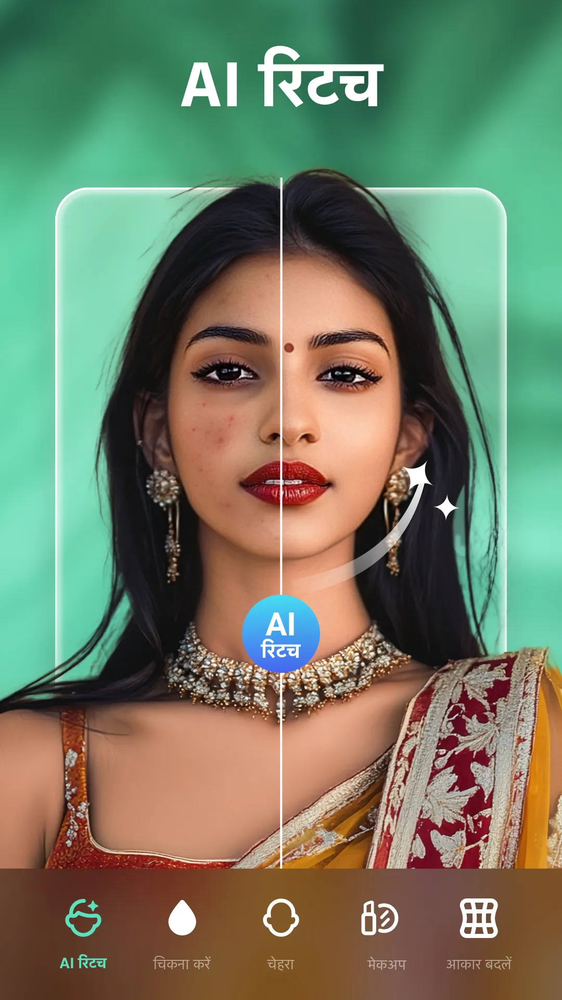
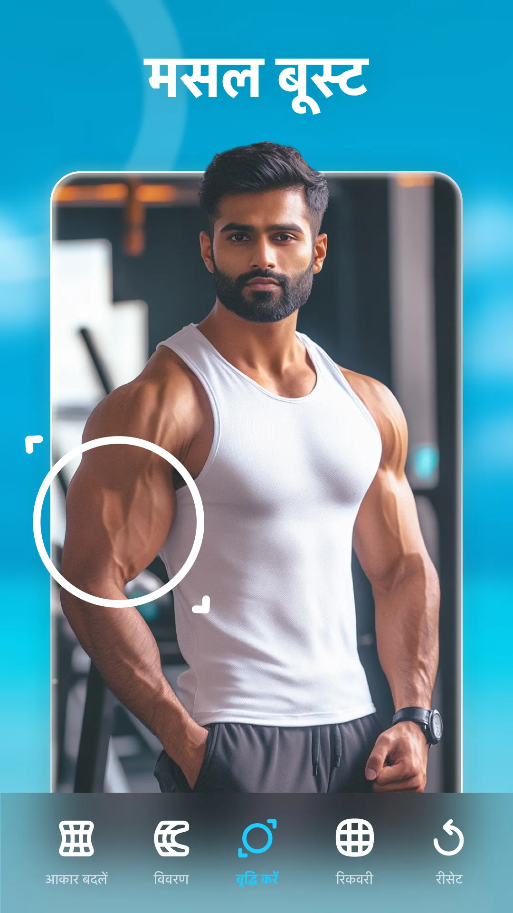

Peachy 新手五分钟上手 从零到第一张修好的照片
完全零基础也能看懂的 Peachy 入门指南，从安装到第一次修图，带你体验 AI 美妆、发型变换和画质增强三大核心功能。
这篇能带你从完全不懂到用起来——不需要任何修图基础，甚至不需要会用任何修图软件，跟着做五分钟就能输出第一张让你惊喜的照片。
Peachy 到底是干嘛的
想象一下：你手机里有一张拍得还不错但总觉得差点意思的自拍——脸有点暗、发型不是最满意的、照片压缩得有点糊。如果有一个应用能让你在几秒钟内试试"换个什么发色好看""化个淡妆试试""把腿拉长一丢丢"，而且全程拖滑块、点预设，不用学任何复杂的操作——那就是 Peachy。
简单说，Peachy 是一款 AI 驱动的人像修图应用。它把磨皮、美妆、发型、身体塑形、画质增强这些原本需要在专业软件里花半小时抠细节的事情，做成了一个个一键功能。你不需要懂什么是图层、什么是蒙版、什么是中性灰——AI 已经帮你算好了，你只需要告诉它"往哪个方向调"。
跟市面上其他修图应用比，Peachy 有两个特别实用的地方：一是它的功能覆盖特别全——从头发丝到脚指头几乎都能调，二是每个功能都有免费版能用的基础款，不用一上来就掏钱包。它的官网上有完整的功能演示和价格说明，感兴趣可以先去逛逛。

五分钟上手：从下载到第一次跑通
别急着注册账号，跟着下面这六步走，五分钟内你就能看到效果。
第一步：获取应用。 安装包从Peachy下载拿最稳妥，或者直接去手机应用商店搜，装完就能打开，不需要额外配置什么。
第二步：导入一张照片。 打开 Peachy，首页中间有个大大的"+"号，点它从相册里挑一张——建议找一张光线还行、脸比较清晰的自拍或人像照。逆光太严重、脸被挡住一半的照片先别用，AI 也需要看清楚五官才能干活。
第三步：选一个功能。 底部工具栏有一排功能分组，比如"美妆""发型""身体塑形""AI 工具"。第一次建议先从"美妆"或"发型"入手——这两个变化最直观，几秒就能看到对比。
第四步：调一个参数。 比如进"美妆"面板，选"口红"，挑一支豆沙色，然后拖一下"透明度"滑块到 25 左右。就这么简单——你会看到口红瞬间"涂"到了照片里的嘴唇上，颜色、形状都自动贴合。
第五步：看看效果。 调好之后，长按图片可以对比原图和修后效果。觉得不对劲就往回拉滑块，或者换个色号试试，反正都是实时预览，不会改坏原图。
第六步：保存。 满意了就点右上角的保存按钮，照片会存到你的相册里，干干净净没有水印。
就这六步，五分钟以内绝对能走完。
上手后先玩这三个功能
Peachy 的功能面板展开来有好几十个，但刚入门不用贪多。先把下面三个玩透，已经能覆盖 80% 的日常修图需求。
第一个：美妆面板——最立竿见影的变化
美妆面板里有五个品类：口红、腮红、眼影、高光、修容。作为新手，口红和腮红是必玩的两个，其他三个可以后面再说。
口红的调法我建议你这样试：选一支豆沙色或奶茶色（这两个颜色基本不挑肤色），质地选"滋润"（日常通勤不会显得太隆重），透明度拉到 20-30 之间——这个区间出来的效果最自然，不会像贴了一块红布，也不会淡得像没涂。
腮红有意思的地方在于它可以拖位置。选中腮红工具后，手指在脸颊上轻轻一拖，腮红就跟着跑。想显得年轻就往苹果肌靠上拖，想显得成熟就往颧骨两侧拖——一个位置的差别，气质完全不一样。

第二个：发型发色变换——秒换一个新造型
这个功能是 Peachy 的招牌之一，操作极其简单。
进"发型"面板，你会看到一排预设：齐刘海、空气刘海、中分、马尾、羊毛卷、锁骨发、公主切……选一个跟你照片里的发型不要差太远的——比如你现在是中分，就先试空气刘海或马尾，别一下子选个羊毛卷，AI 跨度太大容易过渡不自然。
发色这块分纯色和渐变。纯色就是一键换颜色，从自然黑、深棕到亚麻金、粉色、紫色都有。渐变是 Pro 版功能，可以做发根深色发尾浅色或者局部挑染，适合想玩点层次感的人。
新手调发色记住一个小技巧：选完颜色后一定拉一下自然度滑块——100 是保留原发色完全不动，0 是全新发色。第一次调建议 60-80，保留一点原来的发色痕迹，过渡会自然很多。
第三个：AI Enhance——把模糊照片救回来
这个功能藏在"AI 工具"分组里，是 Pro 版专属，但它的效果真的值得专门开一节说。
你有没有过这种情况：手机里翻出一张几年前的旧照片，或者网上找的一张压缩得很厉害的网图，放大看全是马赛克和糊的——这时候丢给 AI Enhance，等 10 到 30 秒，它会把这张图"猜"出更清晰的样子。
用的时候按这个顺序来：先 Enhance 再修人像。很多人搞反了，先磨皮祛痘再 Enhance，结果 Enhance 会对整张图做锐化，把刚修好的皮肤纹理又变粗了。正确顺序是先让 AI 把画质拉上去，再做人像精修，这样磨皮、祛痘这些工具能检测到更多细节，操作更精准。具体的参数调优技巧和 Pro 版功能详解，可以去Peachy文档慢慢翻。
小白的三个常见疑问
我自己刚开始用的时候也踩了不少坑，这三个问题出现频率最高，提前说清楚省得你再撞一遍。
疑问一：免费版到底能用多久、能用到什么程度？
Peachy 没有"试用期"这回事——免费版是永久的，只是部分高级功能（比如 AI Enhance、渐变发色、多色眼影）标了 Pro 标签。免费版能用的基础功能其实已经很够用了：口红、腮红、单色眼影、基础发型预设、纯色发色、身体塑形的基础滑块……日常修图完全没问题。什么时候觉得不够用了再考虑 Pro 就行。
疑问二：AI Enhance 增强后会不会变得假？
老实说，会有这种情况，但跟照片本身的质量有关。AI Enhance 不是魔法，它本质是基于 AI 的超分辨率技术——把模糊的图片"猜"出更清晰的样子。清晰但小的图可以放大 2-4 倍而不糊；稍微模糊的图能明显提升但恢复不到原图精度；严重过曝或欠曝的图能适度恢复但不可能还原已经丢失的信息。所以拿一张完全糊掉的照片去 Enhance 期待"复原清楚"是不现实的，但拿来救一张网图或老照片，效果通常超预期。
疑问三：修完图保存会有水印吗？
没有。不管免费版还是 Pro 版，保存出来的照片都是干干净净的原图质量——这一点 Peachy 做得挺厚道。而且保存的时候可以选不同分辨率，默认是最高分辨率存，不用担心被压缩。
写在最后
Peachy 最棒的地方是它给了新手一个"零压力试错"的环境——所有参数都是实时预览，拖滑块、换预设不会改坏原图，大不了撤销重来。不用记快捷键、不用学界面布局，上手就是"挑照片 → 调参数 → 保存"三步。
等你把上面三个功能玩熟了，下一步可以试试身体塑形里的"溜肩矫正"和"颈部拉长"——这两个是 Peachy 少数能做但其他应用很少做好的细节调整，穿露肩装的时候特别实用。至于纹身、肌肉线条、滤镜特效这些好玩的小功能，留着慢慢探索就行。
这套整理好的资料在 GitHub、Gitee 和 GitCode 上都有同步备份，国内访问哪个方便看哪个。不管你是想让自拍更好看一点，还是想把手机里积压的旧照片翻出来修一修，Peachy 都值得装上试试看。